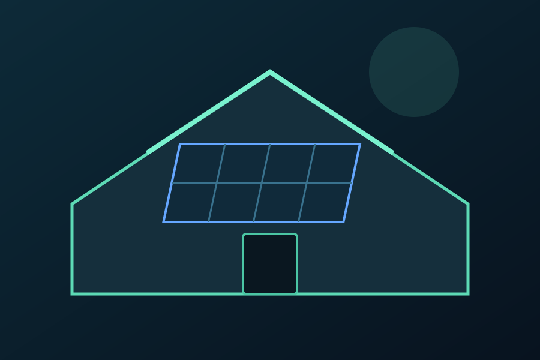
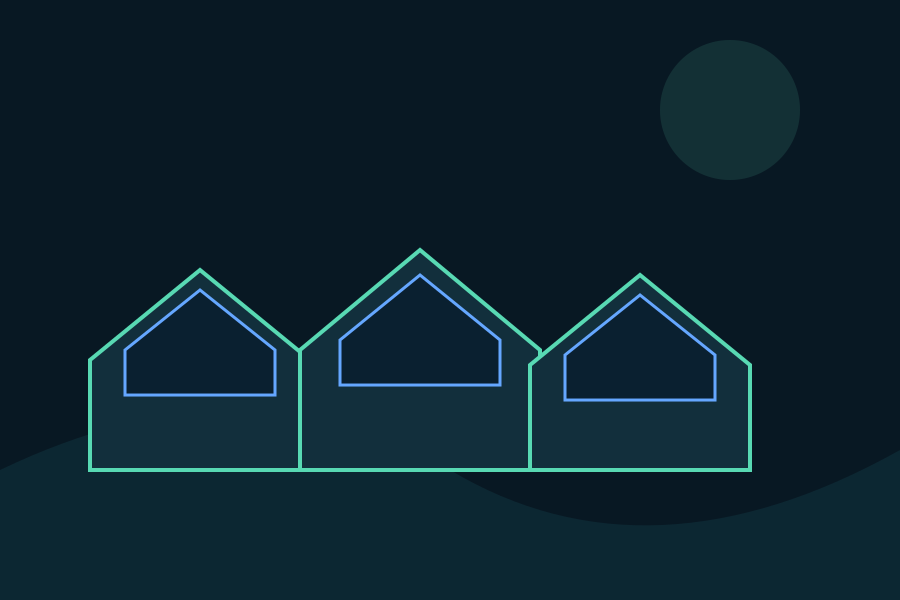

Solar cleaning for every environment.
From homes to solar farms, OSPCS provides scalable cleaning solutions with the experience and equipment to match the job.
Single or double-storey homes.
Give your home solar installation a professional clean. The team has cleaned thousands of panels and uses methods designed to safely remove dust, dirt and debris.


Keep your business performing.
OSPCS has experience working across corporate office parks and commercial sites in the greater Johannesburg and Pretoria areas.
High panel counts. Handled.
OSPCS states that its teams have cleaned 320–500 panels per day and completed a 1,800-panel clean in three days. Large-scale work can be planned around the site's access, equipment and operational requirements.
Plan a site clean →

Recurring cleaning for large communities.
The original OSPCS site highlights six-monthly cleaning work at Kikuyu Residential Lifestyle Estate and Munyaka Waterfall Estate. Recurring maintenance can help property managers plan cleaning across multiple blocks.
Discuss estate cleaning →